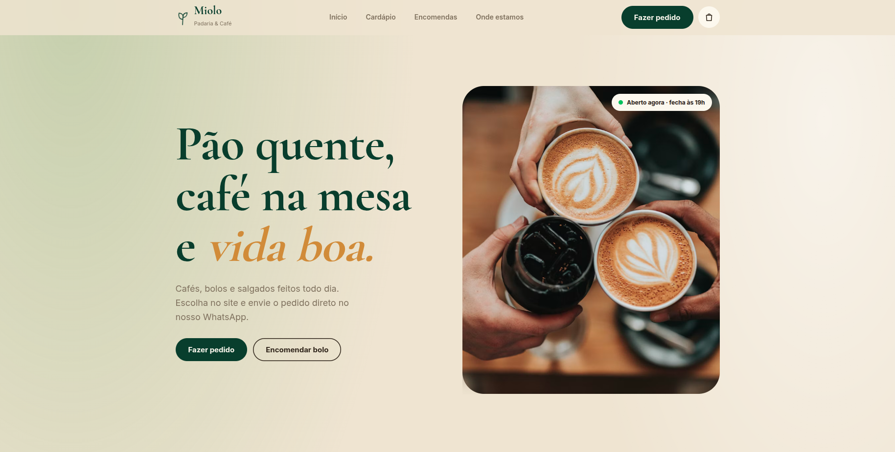
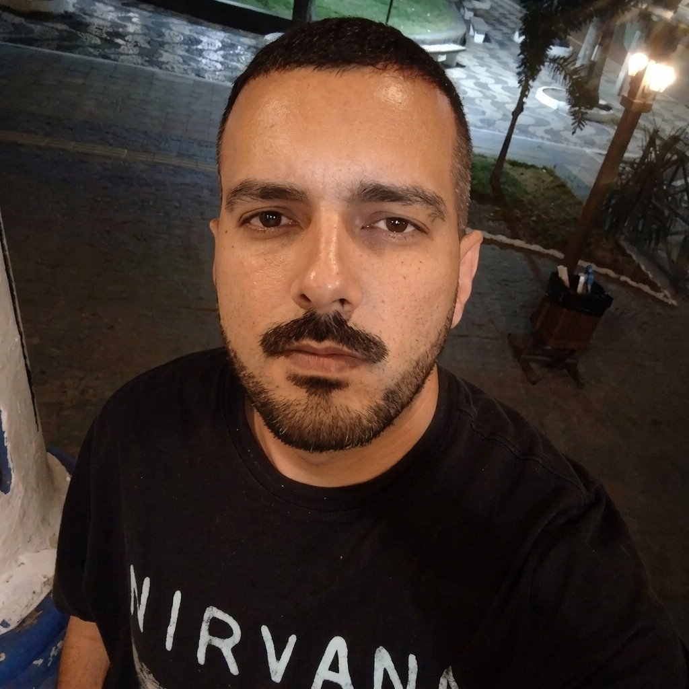
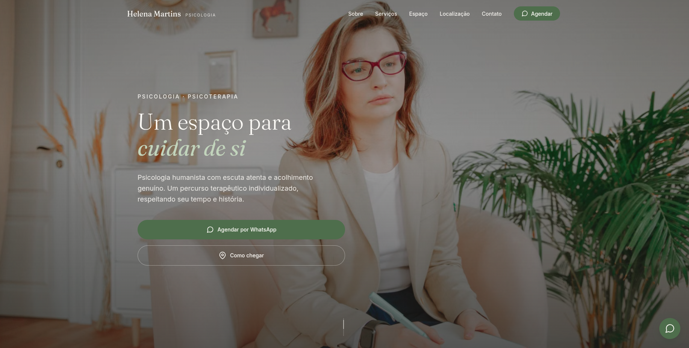
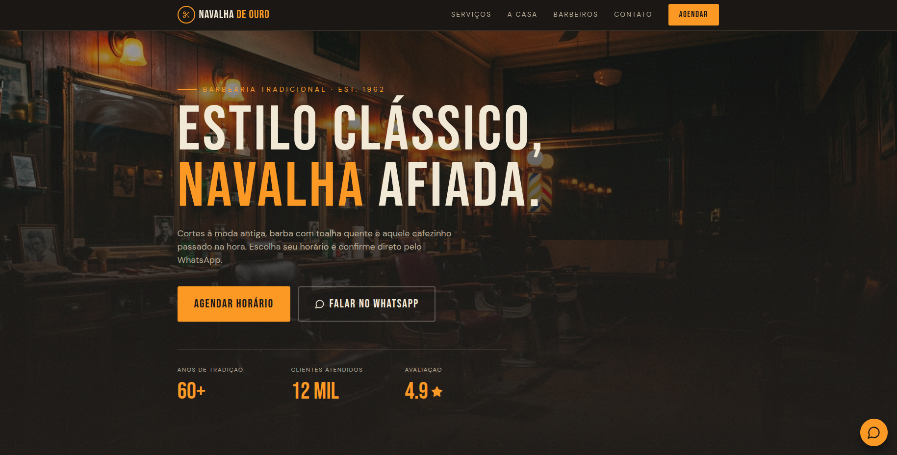
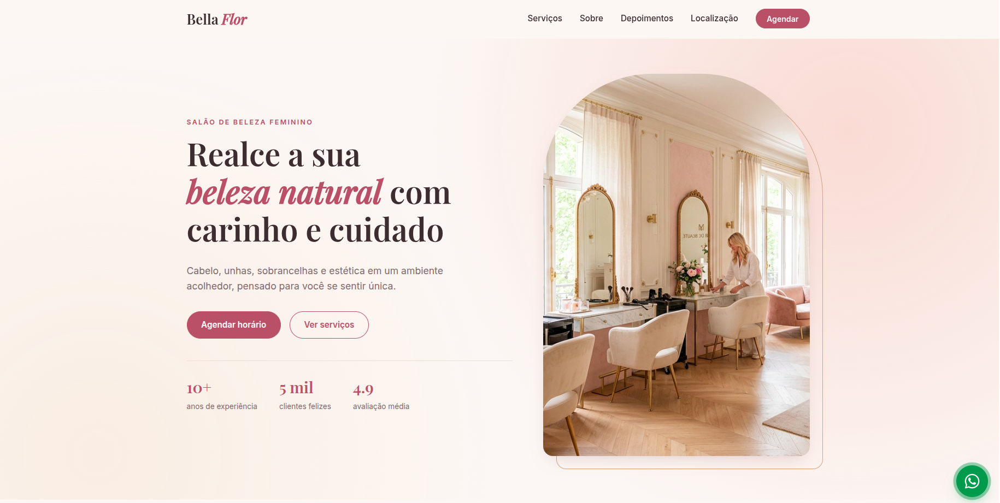
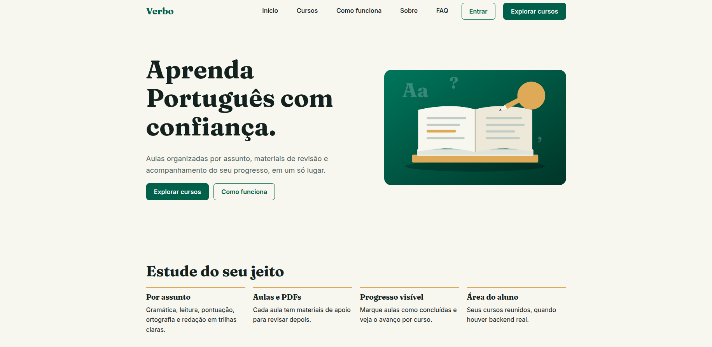

miolo-padaria-cafe

Miolo Padaria & Café
Padaria e cafeteria
Experiência web para uma marca do universo de padaria e café.
Ver projeto Miolo Padaria & Café (abre em nova aba)Desenvolvimento web • Design • Experiências digitais
Desenvolvo experiências web que combinam identidade visual, atenção aos detalhes e interfaces pensadas para pessoas e negócios.

Cinco projetos publicados. Cada link abre o projeto ao vivo em outra aba.

Padaria e cafeteria
Experiência web para uma marca do universo de padaria e café.
Ver projeto Miolo Padaria & Café (abre em nova aba)
Psicologia e atendimento profissional
Presença digital para um serviço profissional de psicologia.
Ver projeto Psicóloga (abre em nova aba)
Barbearia e cuidados masculinos
Site para o segmento de barbearia, com foco na identidade e na apresentação do negócio.
Ver projeto Barbearia (abre em nova aba)
Salão de beleza
Experiência web para um negócio do segmento de beleza.
Ver projeto Salão (abre em nova aba)
Educação, aulas de português
Protótipo demonstrativo de uma plataforma de aulas de português, com dados fictícios e sem pagamento ou backend.
Ver projeto Verbo — Português na prática (abre em nova aba)Gosto de transformar necessidades reais em experiências digitais claras, bem cuidadas e úteis. Cada projeto é uma oportunidade de combinar interface, estrutura e atenção aos detalhes.
Objetivo, público e necessidade.
Conteúdo, hierarquia e fluxo.
Interface, implementação e responsividade.
Testes, acessibilidade e ajustes.
Por enquanto, o GitHub é o canal para ver meu trabalho e falar comigo.